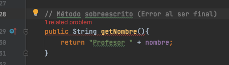
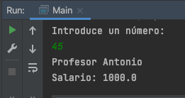

Es posible que no exista relación alguna entre clases, pero lo habitual es que sí, pudiendo ser la relación de:
Tipos de relaciones entre clases:
Composición
Herencia
Herencia
Ya la hemos utilizado al declarar como atributo de una clase, objetos de otra. A tener en cuenta:
Devolver referencias
public class Cuenta implements Serializable {
private long numero;
private Cliente titular;
public Cliente getTitular() {
return titular; // Podrían cambiarlo desde fuera
}
}
Devolver objetos por valor
public class Cuenta implements Serializable {
private long numero;
private Cliente titular;
public Cliente getTitular() {
Cliente aux = new Cliente(this.titular.getNombre(), this.titular.getApellidos(), ...);
return aux; // Ya no pueden cambiar titular desde fuera
}
}
Ojo en los constructores, si cambia fuera el objeto referenciado, también cambiaría en la Cuenta
// Constructor
public Cuenta(long numero, Cliente titular, float interes){
this.numero = numero;
this.titular = titular; // OJO!
this.saldo = 0;
this.interes = interes;
}
// Constructor copia
public Cuenta(Cuenta c){
this.numero = c.getNumero();
this.titular = c.getTitular(); // OJO!
this.saldo = c.getSaldo();
this.interes = c.getInteres();
}
Prueba y corrije el siguiente código creando las clases necesarias:
public static void main(String[] args) {
System.out.println("Bienvenido al catálogo de coches");
Ruedas michelin = new Ruedas("Michelin", "Primacy", 225, 'V');
Ruedas dunlop = new Ruedas("Michelin", "Primacy", 225, 'V');
Coche bmw = new Coche("BMW", "320d", 177, michelin);
System.out.println(michelin);
System.out.println(dunlop);
System.out.println(bmw);
System.out.println("Cambio el ancho del objeto michelin a 245");
michelin.setAncho(245);
System.out.println("Imprimo el objeto BMW");
System.out.println(bmw);
}
Solución, en el constructor de Coche:
// Constructor
public Coche(String marca, String modelo, int caballos, Ruedas ruedas) {
this.marca = marca;
this.modelo = modelo;
this.caballos = caballos;
// this.ruedas = ruedas; // Composición débil o agregación
this.ruedas = new Ruedas(ruedas); // Composición fuerte
}
La Agregación es un tipo de composición débil que indica que una clase es parte de otra clase.
A diferencia de la composición fuerte, las partes agregadas no serán destruidas al destruir la clase principal y además podrán ser compartidas por varios objetos complejos.
En UML, la Agregación se representa con un rombo vacío, mientras que la Composición se representa con un rombo negro.
Ejemplo: Alumno hereda de Persona
Ejemplo: Alumno y Profesor heredan de Persona
public class Persona {
String nombre;
String apellidos;
LocalDate fechaNacim;
...
}
// Alumno hereda de Persona
public class Alumno extends Persona {
String grupo;
double notaMedia;
...
}
// Profesor hereda de Persona
public class Profesor extends Persona {
String especialidad;
double salario;
...
}
Clase Persona
package ejemplos.ejemplo02Personas;
import java.time.LocalDate;
public class Persona {
// Atributos accesibles desde el mismo paquete y subclases
protected String nombre;
protected String apellidos;
protected LocalDate fechaNacim;
// Constructor
public Persona(String nombre, String apellidos, LocalDate fechaNacim) {
this.nombre = nombre;
this.apellidos = apellidos;
this.fechaNacim = fechaNacim;
}
// Getters
protected String getNombre(){
return nombre; }
public String getApellidos(){
return apellidos; }
public LocalDate getFechaNacim(){
return this.fechaNacim; }
// Setters
public void setNombre(String nombre){
this.nombre = nombre; }
public void setApellidos(String apellidos){
this.apellidos = apellidos; }
public void setFechaNacim(LocalDate fechaNacim){
this.fechaNacim = fechaNacim; }
}
Clase Alumno
package ejemplos.ejemplo02Personas;
import java.time.LocalDate;
public class Alumno extends Persona{
// Atributos
private String grupo;
private double notaMedia;
// Constructor
public Alumno(String nombre, String apellidos, LocalDate fechaNacim, String grupo, double notaMedia) {
// Llamada al constructor del padre
super(nombre, apellidos, fechaNacim);
this.grupo = grupo;
this.notaMedia = notaMedia;
}
// Getters
public String getGrupo(){ return grupo; }
public double getNotaMedia (){ return notaMedia; }
// Setters
public void setGrupo(String grupo){ this.grupo = grupo; }
public void setNotaMedia(double notaMedia){ this.notaMedia = notaMedia; }
// Método definido en el padre y sobreescrito aquí
public String getNombre(){
return "Alumno " + nombre;
}
}
Clase Profesor
package ejemplos.ejemplo02Personas;
import java.time.LocalDate;
public class Profesor extends Persona{
// Atributos
private String especialidad;
private double salario;
// Constructor
public Profesor(String nombre, String apellidos, LocalDate fechaNacim, String especialidad, double salario) {
// Llamada al constructor del padre
super(nombre, apellidos, fechaNacim);
this.especialidad = especialidad;
this.salario = salario;
}
// Getters y Setters
public String getEspecialidad() {
return especialidad;
}
public void setEspecialidad(String especialidad) {
this.especialidad = especialidad;
}
public double getSalario() {
return salario;
}
public void setSalario(double salario) {
this.salario = salario;
}
// Método definido en el padre y sobreescrito aquí
public String getNombre(){
return "Profesor " + nombre;
}
}
Main
package ejemplos.ejemplo02Personas;
import java.time.LocalDate;
import java.time.format.DateTimeFormatter;
public class Main {
public static void main(String[] args) {
// Nuevo alumno
LocalDate fecha1 = LocalDate.of(2001, 11, 2);
Alumno alumno = new Alumno("Fran", "López", fecha1, "1DAW", 9.3);
// Nuevo profesor
LocalDate fecha2 = LocalDate.of(1983, 3, 24);
Profesor profesor = new Profesor("Eladio", "Blanco", fecha2, "Programación", 1245.35);
// Salida
DateTimeFormatter formatoFecha = DateTimeFormatter.ofPattern("dd/MM/yyyy");
System.out.println(alumno.getNombre() + " " + alumno.getApellidos() + " ("+ alumno.getFechaNacim().format(formatoFecha)+")");
System.out.println(profesor.getNombre() + " " + profesor.getApellidos() + " ("+ profesor.getFechaNacim().format(formatoFecha) +")");
}
}
Main
Son clases de las que no se van a instanciar objetos directos, pero van a servir de base para que otras clases hereden de ellas.
Persona podría ser una clase abstracta.
Además de los métodos normales, pueden tener métodos abstractos, lo que nos obliga a definirlos en las clases derivadas. Estos métodos sólo pueden ir en clases abstractas e interfaces.
Declaración con abstract
public abstract class Persona {
protected String nombre;
protected String apellidos;
protected LocalDate fechaNacim;
...
// Método abstracto (no tienen cuerpo)
protected abstract void mostrar();
}
Definición de métodos abstractos en clases derivadas
public class Alumno extends Persona{
...
// Método abstracto de Persona que hay que definir
public void mostrar(){
System.out.println(getNombre());
System.out.println("Nota media: " + this.notaMedia);
}
}
public class Profesor extends Persona{
...
// Método abstracto de Persona que hay que definir
public void mostrar(){
System.out.println(getNombre());
System.out.println("Salario: " + this.salario);
}
}
Salida en Main
// Salida métodos mostrar en Main
alumno.mostrar();
profesor.mostrar();
Clases y métodos finales: Las primeras no pueden ser heredadas y los segundos no pueden ser redefinidos.
Ambos se definen mediante el modificador final, el mismo que se utiliza para definir constantes.
Ejemplo método final no redefinible
public abstract class Persona {
...
// Método final
protected final String getNombre(){
return nombre;
}
}
Error al sobreescribirlo en Profesor

Una interfaz indica qué hay que hacer y la implementación especifica cómo se hace.
Ejemplo
Diferencias con las clases abstractas
No es necesario indicar los modificadores porque van implícitos: Los métodos son abstractos.
Una clase puede implementar cualquier interfaz. Basta con indicar implements y a continuación las clases a implementar separadas por comas.
public class Coche implements Serializable, Arrancable {
...
}
0. Clase de la que heredan en el ejemplo
public abstract class Animal {
// Atributos
private String sexo;
// Constructores
public Animal () { sexo = "MACHO"; }
public Animal (String s) { sexo = s; }
// Métodos
public String getSexo() { return sexo; }
public void duerme() { System.out.println("Zzzzzzz"); }
public String toString() { return "Sexo: " + this.sexo + "\n"; }
}
1. Se define la interfaz
public interface Mascota {
String getCodigo();
void hazRuido();
void come(String comida);
void peleaCon(Animal contrincante);
}
2. Se implementa en Gato y se definen sus métodos
public class Gato extends Animal implements Mascota {
// Atributos
private String codigo;
// Constructor
public Gato (String sexo, String codigo) {
super(sexo);
this.codigo = codigo;
}
// Métodos
@Override
public String getCodigo() { return this.codigo; }
@Override
public void hazRuido() { this.maulla(); this.ronronea(); }
public void maulla() { System.out.println("Miauuuu"); }
public void ronronea() { System.out.println("mrrrrrr"); }
@Override
public void come(String comida) {
if (comida.equals("pescado")) {
System.out.println("Hmmmm, gracias");
} else {
System.out.println("Lo siento, yo solo como pescado");
}
}
/**
* Pone a pelear al gato contra otro animal.
* Solo se van a pelear dos machos entre sí.
*
* @param contrincante es el animal contra el que pelear */
@Override
public void peleaCon(Animal contrincante) {
if (this.getSexo().equals("hembra")) {
System.out.println("no me gusta pelear");
} else {
if (contrincante.getSexo().equals("hembra")) {
System.out.println("no peleo contra hembras");
} else {
System.out.println("ven aquí que te vas a enterar");
}
}
}
}
3. Se implementa en Perro y se definen sus métodos
public class Perro extends Animal implements Mascota {
// Atributos
private String codigo;
// Constructor
public Perro (String sexo, String codigo) {
super(sexo);
this.codigo = codigo;
}
// Métodos
@Override
public String getCodigo() { return this.codigo; }
@Override
public void hazRuido() { this.ladra(); }
public void ladra() { System.out.println("Guau guau"); }
@Override
public void come(String comida) {
if (comida.equals("carne")) {
System.out.println("Hmmmm, gracias");
} else {
System.out.println("Lo siento, yo solo como carne");
}
}
/**
* Pone a pelear el perro contra otro animal.
* Solo se van a pelear si los dos son perros.
*
* @param contrincante es el animal contra el que pelear */
@Override
public void peleaCon(Animal contrincante) {
if (contrincante.getClass().getSimpleName().equals("Perro")) {
System.out.println("ven aquí que te vas a enterar");
} else {
System.out.println("no me gusta pelear");
}
}
}
4. Ya se pueden utilizar desde otra clase (main)
public class Main {
public static void main(String[] args) {
Gato garfield = new Gato("macho", "34569");
Gato lisa = new Gato("hembra", "96059");
Perro kuki = new Perro("hembra", "234678");
Perro ayo = new Perro("macho", "778950");
garfield.come("pescado"); // Hmmmm, gracias
lisa.come("hamburguesa"); // Lo siento, yo solo como pescado
kuki.come("pescado"); // Lo siento, yo solo como carne
lisa.peleaCon(garfield); // no me gusta pelear
ayo.peleaCon(kuki); // ven aquí que te vas a enterar
}
}
Implementa el siguiente diagrama de clases y pruébalo en el Main.
Posibilidad de manipular objetos de diferentes clases como si fueran de la misma.
Se consigue mediante la herencia, redefiniendo los métodos en las clases hijas.
Vamos a tener una estructura de datos de la superclase donde se guardarán objetos de las subclases.
Ligadura es la vinculación de la llamada a un método con la clase a la que pertenece. Puede ser estática si se resuelve en tiempo de compilación o dinámica si lo hace en tiempo de ejecución.
Ej: Tenemos un array de Persona, lo recorremos y vamos llamando al método mostrar. En tiempo de ejecución se llamará al método correcto según haya un Alumno o Profesor en esa posición del array.
public static void main(String[] args) {
Scanner s = new Scanner(System.in);
Persona persona;
System.out.println("Introduce un número: ");
int num = Integer.parseInt(s.nextLine());
if(num % 2 == 0){
LocalDate fecha = LocalDate.of(2001, Month.JUNE, 6);
// persona es polimórfico
persona = new Alumno("Jose", "López García", fecha, "1DAW", 9.3);
}else{
LocalDate fecha = LocalDate.of(1983, Month.MARCH, 24);
// persona es polimórfico
persona = new Profesor("Antonio", "Martínez Aranda", fecha, "Programación", 1000);
}
// método definido en Persona y redefinido en Alumno y Profesor
persona.mostrar(); // Ligadura dinámica (resuelve la llamada al mostrar() correcto)
// Comprobar si está instanciado un objeto de Alumno o Profesor
System.out.println("Objeto de clase " + persona.getClass().getSimpleName());
}
Salida ejemplo

Continuando con las clases anteriores de Persona, Alumno y Profesor, implementa una clase GestionPersonas que contenga un array de Persona y un método imprimirPersonal() que llame a los métodos mostrar() de cada elemento del array.
Prueba en el Main a crear varios alumnos y profesores. Después llama a imprimirPersonal() para comprobar que la ligadura dinámica realiza su función correctamente.
Gracias a la ligadura dinámica hemos visto que se puede llamar a un método cómun de las subclases en tiempo de ejecución.
Pero, ¿qué pasa si queremos llamar a un método propio de la subclase?
Es necesario hacer casting a la subclase.
Veamos cómo hacer casting a la subclase para llamar a un método específico de ella, pero antes hay que comprobar su tipo mediante instanceof
Scanner s = new Scanner(System.in);
System.out.println("Introduce un número: ");
int num = Integer.parseInt(s.nextLine());
// persona es polimórfico
Persona persona;
// No sabemos si se va a instanciar un Alumno o un Profesor en tiempo de compilación
if(num % 2 == 0){
persona = new Alumno("David", "Galán", LocalDate.of(2005, 5, 10), "DAW", 7.2);
}else{
persona = new Profesor("Don Antonio", "Toranzo", LocalDate.of(1966, 6, 13), "LM", 2250.75);
}
// Comprobación de tipo y casting a Alumno para llamar a métodos específicos
if(persona instanceof Alumno){
Alumno alumno = (Alumno) persona;
alumno.suspender(); // Método específico de Alumno
}
// MEJOR! Casting directamente en el instanceof
if(persona instanceof Alumno alumno){
alumno.suspender(); // Método específico de Alumno
}
Otra formas de comprobar el tipo de un objeto antes de hacer el casting:
// Forma 1
if(persona.getClass() == Alumno.class){
Alumno alumno = (Alumno) persona;
alumno.suspender(); // Método específico de Alumno
}
// Forma 2
if(persona.getClass().getSimpleName().equals("Alumno")){
Alumno alumno = (Alumno) persona;
alumno.suspender(); // Método específico de Alumno
}
// Forma 3
if(persona instanceof Alumno){
Alumno alumno = (Alumno) persona;
alumno.suspender(); // Método específico de Alumno
}
// MEJOR! Casting directamente en el instanceof
if(persona instanceof Alumno alumno){
alumno.suspender(); // Método específico de Alumno
}
Continúa con el ejercicio añadiendo un menú con diferentes opciones para:
¿Imprimir en PDF?
Navegar por las diapositivas